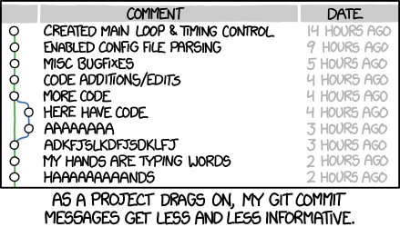

3 Getting Started
Creating your Bookdown course
Go to: https://github.com/rstudio/bookdown-demo
You will need the following:
- R installed
- Rstudio installed
- GitHub account & GitHub Desktop
- Optional: Atom or VSCode installed
See below for explanations and instructions.
R & RStudio
RStudio is an integrated development environment for R, a programming language for statistical computing and graphics. It is available in two formats: RStudio Desktop is a regular desktop application while RStudio Server runs on a remote server and allows accessing RStudio using a web browser. Wikipedia
- Install R from https://cran.r-project.org/bin/windows/base/ (Download R 4.1.1 for Windows or Mac, as appropriate)
- Download R studio (free) https://www.rstudio.com/products/rstudio/download/
- You may need to install packages. You can do this by adding the commands to the console, or go to Tools > Install Packages
-
install.packages(‘rmarkdown’) -
install.packages(‘rlang’) -
install.packages(‘bookdown’)
- If install doesn’t work, go to source of package. e.g. https://cloud.r-project.org/web/packages/bookdown/index.html
Git, GitHub, GitHub Desktop
GitHub is a code hosting platform for version control and collaboration. It lets you and others work together on projects from anywhere.
-
Create a GitHub account
- See the GitHub tutorial
Atom
Atom is a free and open-source text and source code editor for macOS, Linux, and Microsoft Windows with support for plug-ins written in JavaScript, and embedded Git Control. Developed by GitHub, Atom is a desktop application built using web technologies. Most of the extending packages have free software licenses and are community-built and maintained. (Wikipedia.
This is optional, but is definitely handy in creating with Bookdown.
Creating Your Book from a GitHub Repository
If you see a Book you’d like to copy/modify, then go to the repository in GitHub and fork it.
See the following directions from GitHub Docs
Creating a repository
A repository is usually used to organize a single project. Repositories can contain folders and files, images, videos, spreadsheets, and data sets – anything your project needs. Often, repositories include a README file, a file with information about your project. README files are written in the plain text Markdown language. You can use this cheat sheet to get started with Markdown syntax. GitHub lets you add a README file at the same time you create your new repository. GitHub also offers other common options such as a license file, but you do not have to select any of them now.
Your hello-world repository can be a place where you store ideas, resources, or even share and discuss things with others.
-
In the upper-right corner of any page, use the drop-down menu, and select New repository.
-
In the Repository name box, enter hello-world.
-
In the Description box, write a short description.
-
Select Add a README file.
-
Select whether your repository will be Public or Private.
- Click Create repository.
Creating a Book in RStudio
Here are the instructions from https://bookdown.org/home/about/.
Below are a few simple steps for you to get started with writing a book using bookdown. For the comprehensive documentation of bookdown, please see https://bookdown.org/yihui/bookdown.
- Install
- First install the bookdown R package as follows:
-
you can either use the CRAN version install.packages(‘bookdown’)
-
or the development version on Github remotes::install_github(‘rstudio/bookdown’)
The RStudio IDE is recommended but not strictly required (we will show it in the next steps).
- Edit
One way to get started is to fork or clone the repository https://github.com/rstudio/bookdown-demo (if you are not familiar with Git and GitHub, you can alternatively download it as a zip file and unzip it). Alternatively, if you are using a recent version of the RStudio IDE, you can directly create a book project in the IDE.
Open the demo book project within RStudio, open the index.Rmd file, and click the Knit button:
Now you should see the index page of this book demo in the preview window
The Knit button renders just the chapter you are currently editing (e.g. index.Rmd, 01-intro.Rmd, etc.) using the default output format for the book. To build all chapters and all formats of the book you can use the Build Book button within the RStudio Build pane:
By default the HTML, PDF, and ePub formats of the book will be compiled into the book sub-directory of the project (you can also build a single format at a time using the Build Book menu).
Note that if you want to generate PDF, you’d need a LaTeX distribution.
- Publish
To publish your books to bookdown.org, you need to first create an account by signing in with your Google account, and then call the function publish_book() in R:
bookdown::publish_book(render = ‘local’) If it is the first time you have tried to publish the book, you will be asked to authorize bookdown to publish to your bookdown.org account.
Making Edits to Book
- In GitHub desktop, clone the repository to your computer. (e.g. https://github.com/ma-lead)
- In Atom: Edit content
- In RStudio: Build book, see preview
- In GitHub Desktop: Commit to main and Push origin
